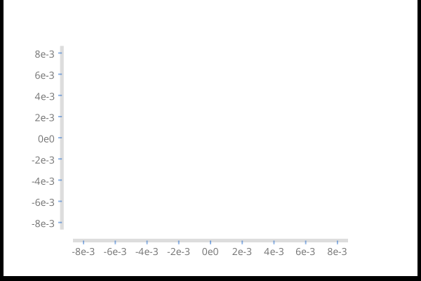

chart-unit is an experimental haskell chart library.
scratchpad

This slowly growing collection of charts:
A chart can be anything that is represented on an XY plane, and usually comes with visual clues about what is being represented, such as axes, titles and legends. Here's the default blank chart:
axes (chartAspect .~ sixbyfour $ chartRange .~ Just one $ def)sixbyfour is a value of type XY, and represents the rectangle that the chart will be rendered with. As with any SVG element, the ultimate product is still subject to sizing on use, so think of sixbyfour as a relative aspect ratio rather than a concrete size.
chartRange is the range which we would like to plot. chartRange .~ Nothing represents that the range should be whatever the data range is.
Axes and most other things are highly customizable. Here's another style of chart:
Some actual, real-life lines to be plotted:
lines lineDefs sixbyfour lineDataBreaking the code down:
lines is a typical chart renderer, taking a[LineConfig], which is a list of configurations for each line, anAspect, the aspect ratio to render the chart, and, finally(Traversable g, Traversable f, R2~r) => g (f (r a)), or in this case, a [[V2 Double]], which is a double container of the values to chartYou don't have to do anything special to combine these lines with axes.
lines lineDefs sixbyfour lineData <>
axes (chartRange .~ Just (rangeR2s lineData) $ def)withChart is a convenience function for this common operation, and the code below is equivalent to the above code:
withChart def (lines lineDefs) lineDataOther default chart types follow this same pattern:
xys <- mkScatterData
withChart (chartAspect .~ asquare $ def) (scatters scatterDefs) xysAs with line, scatter zips together multiple configurations and multiple containers of data. It's often much easier to construct charts assuming multiple data sets.
A major point of the chart-unit library is that the look-n-feel of a chart is invariant to the data scale.
let xys1 = fmap (over _x (*1e8) . over _y (*1e-8)) <$> xys in
withChart (chartAspect .~ asquare $ def) (scatters scatterDefs) xys1A histogram, in widescreen
A histogram, with unequal bin sizes (based on quantiles)
... converted to a line chart
A labelled bar chart:
A chart with a color for each XY point in a plane. Close synonyms are probably an area chart, a surface chart. A contour chart must be close.
axes technology can be re-purposed to create skinny charts:
chart-unit is a fairly thin wrapper over diagrams that establishes the basics of what a chart is, and provides some sane defaults. From this starting point, production of high-quality charting is easy and pleasant. Some examples:
Comparing two histograms.
A scatter chart with histograms of the data along the x & y dimensions.
A unital gradient chart, using diagrams arrows:
The QChart type exists to enable combining different types of charts using the same scale.
Clipping charts

Double-containered dimensioned data covers what a chart charts - one or more data sets with at least an x and y dimension (called R2 in the linear library).
Most chart variations are about what to do with the extra dimensions in the data. A rectangle, for example, is built from 4 dimensions, an anchoring of position in XY space, with a width (W) and height (Z). A contour map is three dimensional data (V3 in linear), with placement as XY and color as Z.
In constructing new chart units:
You can slide up and down the various diagrams abstraction levels creating transformations at each level. For example, here's something I use to work at the point level:
unitp f = unitSquare # f # fromVertices # closeTrail # strokeTrailrecipe 1
scratch :: Chart SVG -> IO ()
scratch = fileSvg "other/scratchpad.svg" (600,400)I tend to work in ghci a lot, using the above scratch to try code out, mashing the refresh button in the browser. Or I switch on stacks --file-watch ...
recipe 2
stack build --test --exec "$(stack path --local-install-root)/bin/chart-unit-examples" --exec "$(stack path --local-bin)/pandoc -f markdown+lhs -i app/examples.hs -t html -o index.html --filter pandoc-include --mathjax" --file-watch